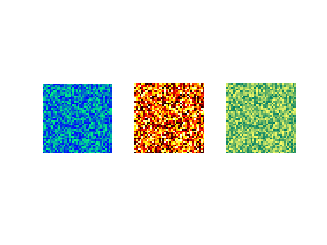
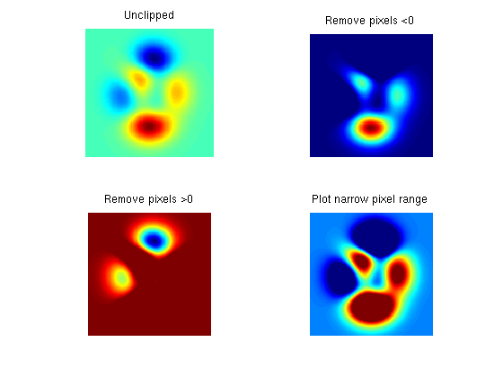

mat2im
mat2im - convert grayscale to rgb image
function im=mat2im(mat,cmap,maxVal)
Contents
Purpose
Uses vectorized code to convert matrix mat to an m-by-n-by-3 image matrix which can be handled by the Mathworks image-processing functions. The the image is created using a specified color-map and, optionally, a specified maximum value. Note that it discards negative values!
Inputs
- mat - an m-by-n matrix
- cmap - an m-by-3 color-map matrix. e.g. hot(100). If the colormap has few rows (e.g. less than 20 or so) then the image will appear contour-like.
- limits - by default the image is normalised to it's max and min values so as to use the full dynamic range of the colormap. Alternatively, it may be normalised to between limits(1) and limits(2). Nan values in limits are ignored. So to clip the max alone you would do, for example, [nan, 2]
Outputs
- im - an m-by-n-by-3 image matrix
Examples
- Example 1 - combine multiple color maps on one figure
clf, colormap jet, r=rand(40); subplot(1,3,1),imagesc(r), axis equal off subplot(1,3,2),imshow(mat2im(r,hot(100))) subplot(1,3,3),imshow(mat2im(r,summer(100))) colormap winter %changes colormap in only the first panel
Example 2 - clipping
p=peaks(128); J=jet(100); subplot(2,2,1), imshow(mat2im(p,J)); title('Unclipped') subplot(2,2,2), imshow(mat2im(p,J,[0,nan])); title('Remove pixels <0') subplot(2,2,3), imshow(mat2im(p,J,[nan,0])); title('Remove pixels >0') subplot(2,2,4), imshow(mat2im(p,J,[-1,3])); title('Plot narrow pixel range')
See Also
ind2rgb, imadjust